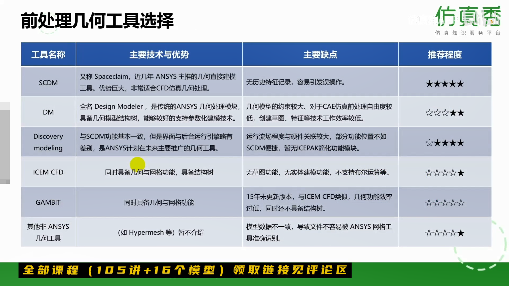

CFD学习笔记002
前处理技术与网格工具
不会花很多时间，科普性质

Discovery modeling 在五年之内集成很多功能，有学习的前途
Fluent Meshing 工作流技术
-
官方的二次开发，在Fluent Meshing引入工作流技术，
-
包含“水密几何”与"容错几何”两个工作流程。
-
只需少量学习培训，所有用户都可以在Fluent Meshing中创建高质量的CFD网格
-
消除了学习Fluent Meshing网格划分的入门障碍
-
允许部署自定义工作流以实现自动化。
-
从网格划分到求解再到后处理的整个工作流，都在统一的操作界面下完成。
-
传统的高级Fluent Meshing功能仍旧可用
-
支持Poly多面体网格与最新的Poly-Hexcore马赛克网格
-
水密几何工作流(Workflow for Watertight Geometry)可能需要SCDM配合来完成网格划分。
-
容错几何工作流稳定性与工作效率，仍在探索之中
网格类型与网格选择
四面体：
-
体积小，数量多
-
适合复杂表面，可自动生成
六面体：
-
同等尺寸下，数量少
-
复杂几何工作量大
-
六面体=结构化？
五面体：
-
六面体与四面体过渡
-
混合网格、自动生成
-
不能作为**主要填充**网格
三棱柱：
-
四面体表面的边界层
-
自动生成、描述表面
-
不能作为**主要填充**网格
六面体网格VS.四面体网格
优势
-
采用六面体网格可以减小网格数量
-
对于流动方向沿着网格的问题，六面体网格可以减小数值误差需求
√ 几何形状复杂时工作量极大（能力&耐心）
√ 几何曲率较大时，网格质量难以有效控制
多面体(Polyhedral)网格介绍
-
网格数量减少为四面体的1/3左右
-
有效提高网格质量
-
更精确的计算控制体的梯度
-
更高的收效率
-
不支持逆转化
-
不支持光顺、合并、自适应等网格编辑操作
99%的绝对优势，
PS:
1 | 干净几何结构工作流程（Watertight Geometry workflow）(即WTM) |
注射器内流场网格划分
视频
本博客所有文章除特别声明外，均采用 CC BY-NC-SA 4.0 许可协议。转载请注明来自 夜猫与百灵！